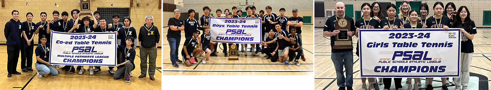

 Stuyvesant High School has a boys and girls table tennis team. The champion of the 23-24 season of Boys Table Tennis was Brooklyn Tech, and the champion of the 23-24 season for Girls Table Tennis was Francis Lewis. Stuyvesant placed third in the Girls Table Tennis Finals. PSAL Championship In the Boys’ Individuals Singles event, Stuyvesant’s first singles player placed third. In the Doubles event, Stuyvesant’s first doubles pair placed third. In the Girls’ Individuals Singles event, Stuyvesant’s first singles placed first and first doubles placed second in the Doubles event. We’re looking forward to the next season!